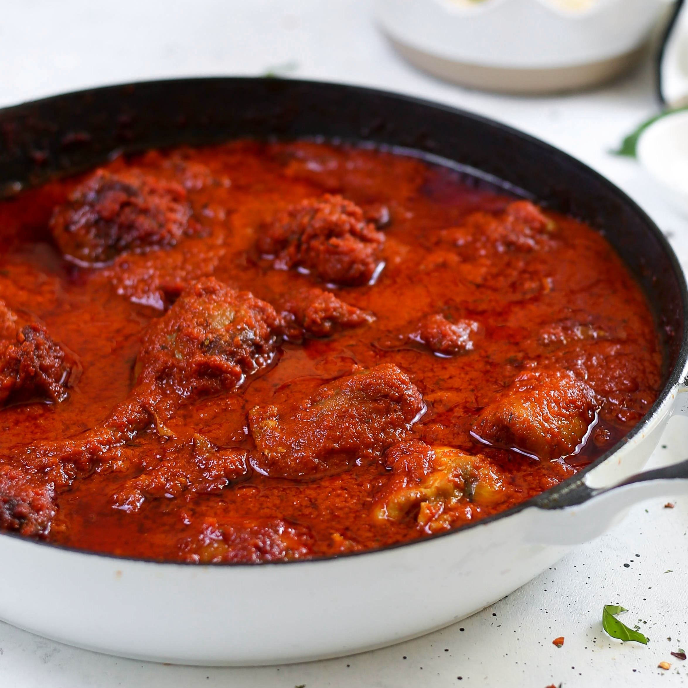

Nigerian Beef Stew
Description
Nigerian Beef Stew is a rich and hearty dish that is a staple in Nigerian cuisine. It’s known for its deep red color, which comes from a blend of tomatoes and red bell peppers. The stew is typically made with beef, which is seasoned and cooked until tender. Aromatic spices like ginger, garlic, and chili peppers add layers of flavor, creating a slightly spicy and incredibly savory stew.
Ingredients
- Chunks of Beef
- Vegetable or Sunflower Oil
- 6 Tomatoes
- 2 Scotch Bonnets
- 2 Bell Peppers
- 2 Medium Onion
- Stock / bouillion cubes
Steps
- Make the pepper mix by blending the scotch bonnet, bell peppers, tomatoes and 1 onion.
- Pour blended peppers in a pot, put on the heat and boil to reduce the water content.
- In a separate pot, boil the beef chunks with chopped onions, stock cube and salt.
- After boiling till tender, separated the left over beef stock, then transfer to a pan of oil and fry.
- In a pot, add vegetable oil and chopped onions, saute for 3 minutes (If you fried the beef use the vegetable oil from frying the beef) then add in the boiled pepper mixture.
- Add the beef stock, stock cubes and salt and leave it to fry for 15 minutes.
- Add in the fried beef and let the stew fry for another 5 - 10 minutes.
- Cover the pot slightly with lid to minimise splash all over cooker and kitchen worktop.
- Take the stew off the heat after 5 minutes and it's ready.